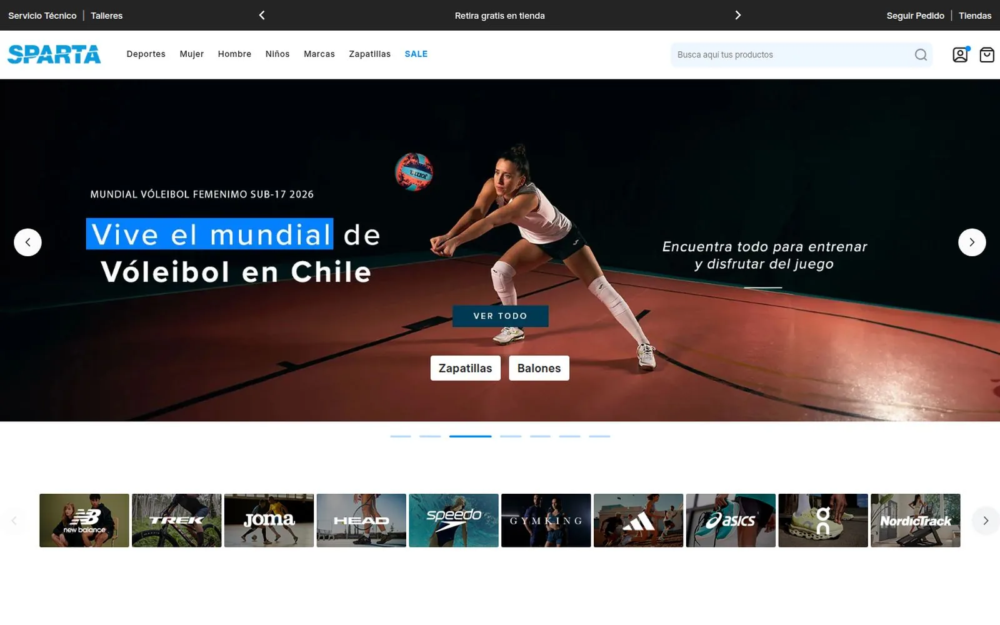

Five stores, one codebase
Five brands with their own identity and their own commercial calendar, on a shared Adobe Commerce codebase, with a single person on frontend.
- Context
- Sparta runs the sports retail of five brands in Chile —Sparta, New Balance, Head, Speedo and Trek—, each with its own store, identity and commercial calendar, on a shared Adobe Commerce codebase.
- The problem
- Two of the stores needed a new theme and the other three were still running the theme inherited from the previous agency. Anything touched in the shared codebase —an improvement, a module, an infrastructure change— had to keep working in both worlds at once.
- What I did
- I took ownership of the frontend for all five stores. For New Balance Chile I designed the entire interface in Figma and built the theme from scratch; for Sparta I took part in the page design and also built the theme from scratch. On Head, Speedo and Trek I worked on the inherited theme: adapting the code to the site's new infrastructure, fixing pre-existing issues and rolling out the improvements and modules shared across every store. I also built the UI kits that became the single source of truth between design and development.
- Outcome
- Two new sites in production with distinct identities, and three inherited ones kept running and up to date without a rebuild. Five stores in parallel, with one person on frontend.